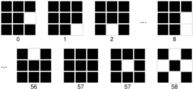

Table of Contents
A Locally Binary Pattern (LBP) is a local descriptor that captures the appearance of an image in a small neighborhood around a pixel. An LBP is a string of bits, with one bit for each of the pixels in the neighborhood. Each bit is turned on or off depending on whether the intensity of the corresponding pixel is greater than the intensity of the central pixel. LBP are seldom used directly, however. Instead, the binary string thus produced are further quantized (Quantized LBP) and pooled in local histograms (Histograms of LBPs).
While many variants are possible, VlLbp implements only the case of 3 × 3 pixel neighborhoods (this setting was found to be optimal in several applications). In particular, the LBP centered on pixel \((x,y)\) is a string of eight bits. Each bit is equal to one if the corresponding pixel is brighter than the central one. Pixels are scanned starting from the one to the right in anti-clockwise order. For example the first bit is one if, and only if, \(I(x+1,y) > I(x,y)\), and the second bit is one if, and only if, \(I(x+1,y-1) > I(x,y)\).
Quantized LBP
For a 3 × 3 neighborhood, an LBP is a string of eight bits and so there are 256 possible LBPs. These are usually too many for a reliable statistics (histogram) to be computed. Therefore the 256 patterns are further quantized into a smaller number of patterns according to one of the following rules:
- Uniform (VlLbpUniform) There is one quantized pattern for each LBP that has exactly a transitions from 0 to 1 and one from 1 to 0 when scanned in anti-clockwise order, plus one quantized pattern comprising the two uniform LBPs, and one quantized pattern comprising all the other LBPs. This yields a total of 58 quantized patterns.

The number of quantized LBPs, which depends on the quantization type, can be obtained by vl_lbp_get_dimension.
Histograms of LBPs
The quantized LBP patterns are further grouped into local histograms. The image is divided into a number of cells of a prescribed size (as specified by the parameter cellSize passed to vl_lbp_process as described in Getting started with LBP). Then the quantized LBPs are aggregated into histogram by using bilinear interpolation along the two spatial dimensions (similar to HOG and SIFT).